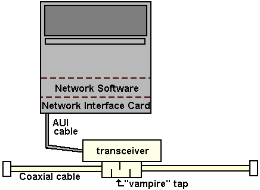
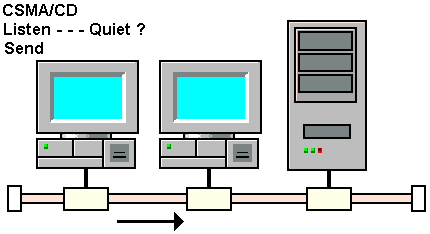
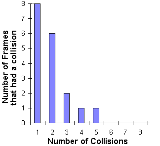

Ethernet is one of the oldest and currently still the most popular
LAN
technology. The first Ethernet
MIB
document was RFC 1398, Definitions of
Managed Objects for the Ethernet-like
Interface
Types.
The physical structure of an ETHERNET.
Ethernet works by connecting an almost unlimited number of devices to the same
coaxial cable. A station is connected to an
Attachment Unit Interface (AUI)
cable. This cable connects to a transceiver that clamps onto the coaxial cable
(by "vampire" Tap).
The most popular physical layout today is the use of a twisted pair cable to
connect
stations to a hub . Multiple hubs are connected by a high-quality grade of
shielded twisted pair or by fiber-optic cable.
The common Ethernet transmission speed is 10 Megabits per second (Mbps).

Connecting a Station to Thick Ethernet
How Does an Ethernet Work ?
A station can transmit whether the cable is not in use. The frame header
contains the physical address of the destination station. All of the stations
on the LAN hear the frame, but only the destination station accepts it.
This figure is based on a rule called
Carrier Sense Multiple Access with Collision Detection (CSMA/CD)
. If two or more stations start transmitting at the same
time, a collision occurs. Both senders then wait a random amount of time before
transmitting again.

The CSMA / CD protocol.
The protocol needs a few more rules to operate correctly :
-
A station has to respect a minimum time between two transmissions to give the
receiver time to finish processing one
frame
before having to receive another.
This time is 9.6 micro-seconds.
-
Frames must be at least 64 octets long so that all the stations can hear if
there is a collision.
-
The maximum frame size is 1518 octets.
The Ethernet MIB (1.3.6.1.2.1.10.)
The interfaces group and its extensions include detailed counts of incoming and
outgoing traffic.
The Ethernet MIB adds :
A statistics table that contains counts of Ethernet errors.
A
statistics table
used to build a histogram of collision frequencies.
information needed to configure and trigger a
Time-Domain Reflectometry (TDR) test
, used to check the distance to a cable default.
OBJECT IDENTIFIERs for popular chipsets.
The
Collision Histogram Table
This table contains the information needed to build a collision histogram. When
a station intents to send a frame, there can be one or more collisions before it
succeeds or gives up. For example, in the histogram below we can see that the
first block of rectangles shows that, within the measurement period, there were
eight frames that collided on the first try, but were transmitted on the second
try. There were also, six frames that collided on both the first and the second
tries, but then were transmitted without a problem.

Collision Histogram
The TDR Test
The Ethernet MIB defines a test that can be applied to coaxial cable
implementations. This test called Time-Domain Reflectometry (TDR) test is used
to check the approximate distance to an Ethernet coaxial cable default. The test
result is defined as the time interval between the start of the test
transmission and subsequent detection of a collision or "absence" of carrier.
A network
manager
can start, stop and get results of the test (in
100-nanosecond units) with the ifExtension group variables (1.3.6.1.2.1.12).